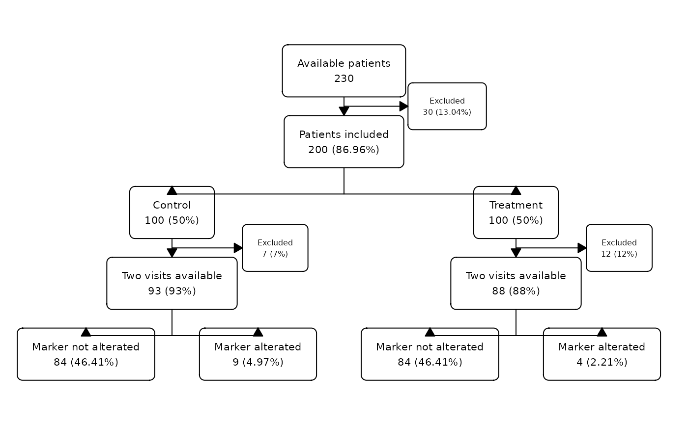

Simulated clinical trial information by patient Simulated dataset of a clinical trial comparing some biomarker values between two randomized groups (control/treatment). This dataset contains the information by patient. It is equivalent to the dataset clinic_visit, which has the same information by visit.
Source:R/clinic_patient.R
clinic_patient.RdSimulated clinical trial information by patient Simulated dataset of a clinical trial comparing some biomarker values between two randomized groups (control/treatment). This dataset contains the information by patient. It is equivalent to the dataset clinic_visit, which has the same information by visit.
Usage
data(clinic_patient)Format
A data frame with 230 rows and 8 columns
- id:
Identifier of each patient.
- age:
Age values.
- consent:
The patient has signed the informed consent?
- group:
Randomized group: control/treatment.
- n_visits:
Number of follow-up visits.
- marker_alt:
Is the marker alterated in any of the visits?
Examples
clinic_patient |>
as_fc(label = "Available patients") |>
fc_filter(age >= 18 & consent == "Yes", label = "Patients included", show_exc = TRUE) |>
fc_split(group) |>
fc_filter(n_visits == 2, label = "Two visits available", show_exc = TRUE) |>
fc_split(marker_alt, label = c("Marker not alterated", "Marker alterated")) |>
fc_draw()
